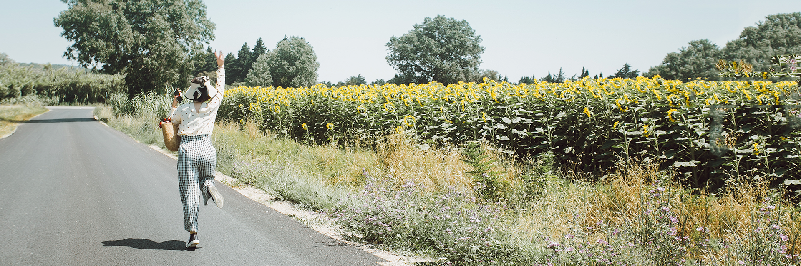
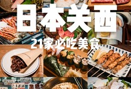
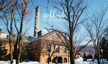

旅游攻略导航
国内
国外
主题
 2京都
3东京
4广州
5日本
6北海道
7重庆
8曼谷
9泰国
10成都
2京都
3东京
4广州
5日本
6北海道
7重庆
8曼谷
9泰国
10成都
推荐攻略
555天中国饮食探索之行——第186~188天 济南 进入
泉城 济南 ，太耳熟的地方了。如果这些年的教材没有发生太大变化，随便在什么地方拉上一个小学生，估计都能说出 济南 的千 佛山 、大明湖、趵 突泉 。对于 济南 这样一座有山有林有江泉的城市而言，它确实担得起这样的盛名。只可惜 济南 的美，大都不存在于这个季节。
舟山群岛网红打卡景点全攻略进入
舟山群岛风光秀丽，气候宜人。这里秀岩嶙峋，奇石林立，异礁遍布，著名景观有海天佛国普陀山、海上雁荡朱家尖、海上蓬莱岱山等。海岛特有的景致赋予了这里无穷的迷人魅力，蓝天、碧海、绿岛、金沙、白浪是舟山群岛的主色调，下面就一起去看一看吧！
（四日桂林阳朔经典游）一叶轻舟过，烟雨漓江，诗意阳朔进入
坐在竹筏上，看筏工慢慢撑着长篙，将我们送进画里 撑一把油纸伞，轻轻坐在船头，放慢呼吸，轻舟划过，流连于仙境之间 江作青罗带,山如碧玉簪

历时半个月，我们吃出了一份日本关西美食必吃榜！进入
在关西半个月，吃到走不动 第一次旅行的时候，我们还在规划当地经典景点行程。而现在，安排的是当地的必吃餐厅。 日本关西，半个月行程，我们替你吃出了一份关西美食榜单。 可能需要准备好纸巾，用来擦擦口水。😂 01 >>吟酿拉面 久保田(本店) 京赤地鸡...

酒香里的北海道，就要玩出不一样！进入
提起北海道，首先想到什么—— 是岩井俊二的电影《情书》？ 是滑雪场的速度与激情？ 还是冒着热气的露天温泉，或是丘陵谷地的薰衣草田？